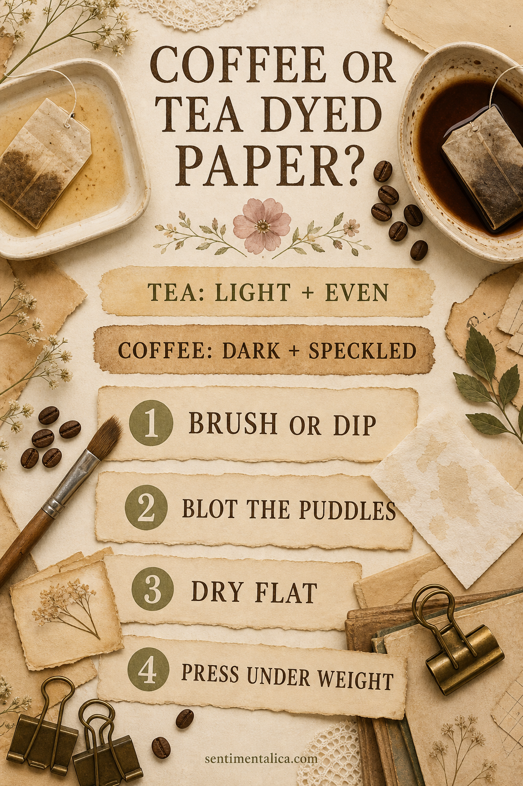
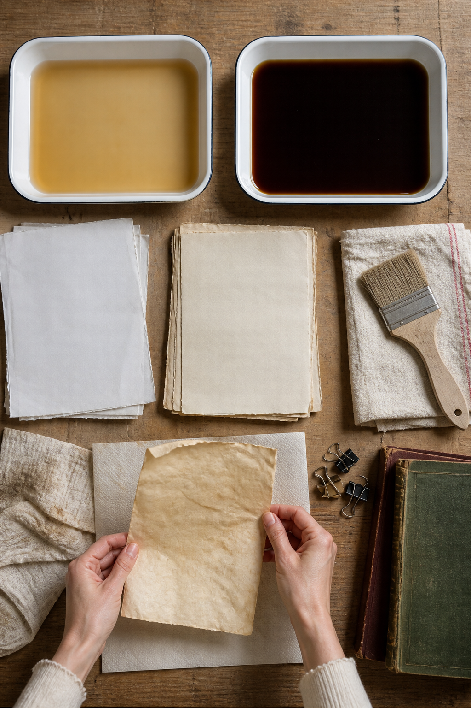
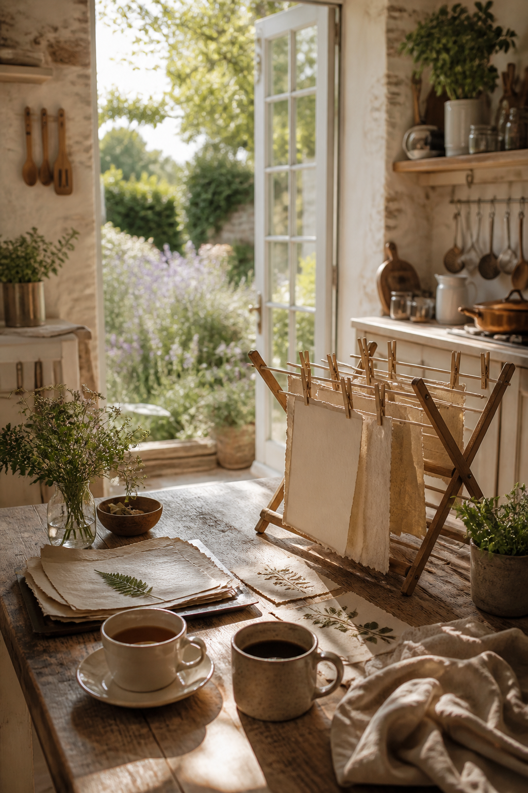
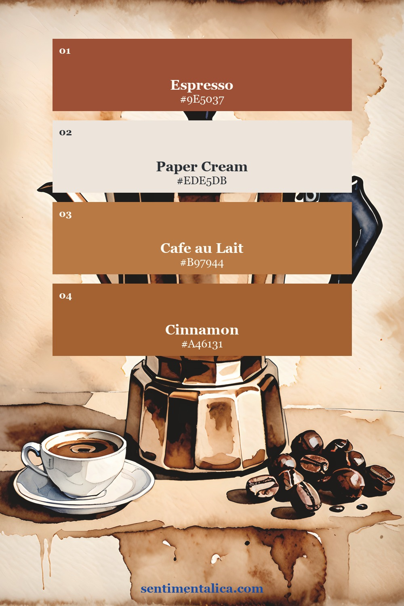
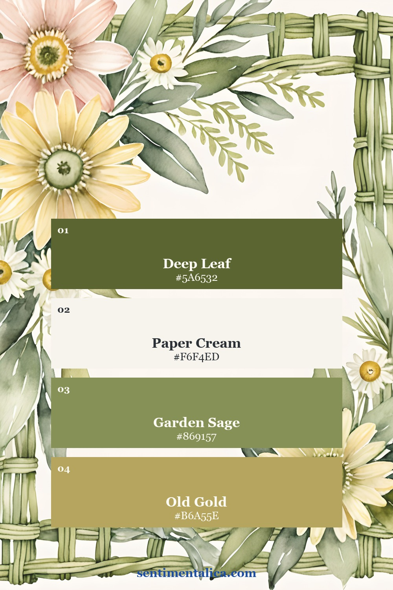
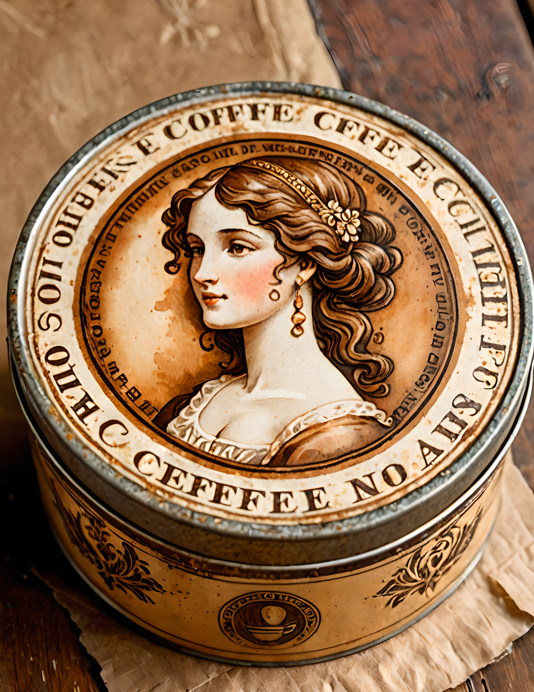
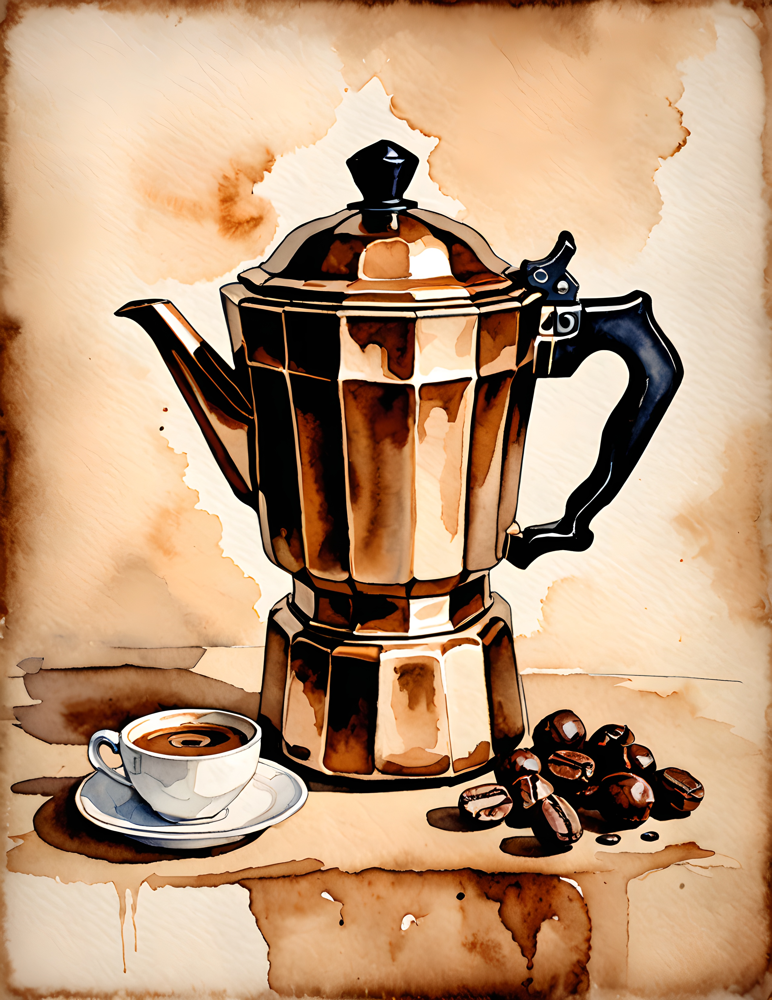
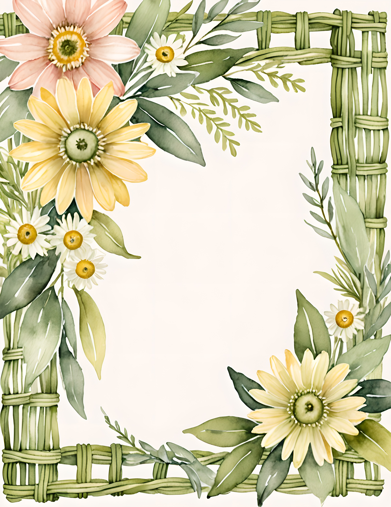

Coffee and tea dyed paper is loved for its warmth, but the part nobody wants is a stack of curled, brittle-looking sheets. The difference is usually not a secret ingredient. It is water control. Use less liquid, support the wet sheet, remove puddles early, and press only after the paper is completely dry.

Choose tea for an even wash and coffee for stronger marks
Black tea usually makes a light honey or parchment tone. It is useful when you want writing space to remain clear. Coffee produces deeper brown edges, speckles, rings, and dramatic variation. You can also use both: begin with a weak tea wash, let it dry, then add a little coffee around the edges.
Brew the liquid stronger than you would drink it, then let it cool. Test one scrap first. Different papers absorb at different speeds, so a pale-looking tray can still produce a dark sheet.
Brush or dip without soaking the sheet
Protect the table and place the paper on a tray. For the most control, brush the liquid across one side with a wide, soft brush. Turn the sheet only if you want more color. For a dip, slide the paper into a shallow layer of liquid and lift it again within a few seconds. Long soaking is more likely to weaken the surface and exaggerate buckling.

For rings and speckles, make them after the first wash. Press a cup rim lightly onto damp paper, flick a few small drops, or touch the edge with a stronger coffee mixture. Stop before every area is brown. Quiet cream spaces make the marks look intentional.
Blot first, then dry with air on both sides
Lift a wet sheet by two corners and let excess liquid fall back into the tray. Lay it on an absorbent cloth or clean towel and touch visible puddles with a second cloth. Do not rub. Puddles dry darker than the surrounding paper and can leave hard patches.
Move the sheet to a drying rack, mesh screen, or clean surface where air can reach it. If it lies flat on a table, turn it once the top no longer shines. Keep the sheets separate until they feel dry and cool, including the center.

Press only when the paper is fully dry
Place dry sheets between clean plain paper, then put them under two heavy books overnight. For a stubborn curl, use an iron on a low dry setting with clean protective paper above and below the dyed sheet. Keep the iron moving and test a corner first. Never iron damp paper.
Coffee and tea are kitchen materials, not archival treatments. Use dyed sheets for decorative pages, tags, pockets, practice projects, and everyday journals. Keep irreplaceable photographs and important documents on stable materials, and never store paper that is even slightly damp.
Try the method before using a favorite printable
Plain printer paper is perfect for the first test. You can also download the 100 free floral pictures from Sentimentalica, print one image twice, and compare a pale tea wash with a coffee-edged version. A spare copy removes the fear of experimenting.
Two palettes for a warm vintage paper story
The first palette comes from a real Morning Brew page and moves from paper cream into café browns. The second comes from Morning Trellis and pairs cream with leaf green, sage, and old gold. Use one as your main direction instead of pulling every brown and green into the same project.


See the real printable pages
Morning Brew leans into coffee tins, cups, beans, and warm kitchen browns. Morning Trellis adds airy florals and cottage-garden greens. These are genuine customer pages from the two collections, not mockups.



Make one pale sheet, one darker sheet, and one speckled sheet. That small set is enough to learn how your paper reacts before you prepare a whole batch. For more practical paper and journal ideas, continue through the Sentimentalica journal.